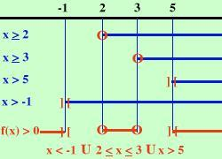

|
x2 - 5x + 6 --------------- x2 - 4x - 5 Pongo sia il numeratore che il denominatore maggiori di zero, anzi il numeratore maggiore od uguale a zero ed il denominatore solo maggiore di zero x2 - 5x + 6 x2 - 4x - 5 Non avendo ancora fatte le disequazioni di secondo grado scompongo sia il numeratore che il denominatore, ottengo (x - 2)(x - 3) (x - 5)(x + 1) quindi pongo ogni fattore maggiore di zero x - 2 x - 3 x - 5 x + 1 calcolando x x x x faccio lo schema x x x x f(x) + + + + ]-1[ - - - - - (2) + + + + (3) - - - - - -]5[ + + + + + se hai bisogno di aiuto per leggere il grafico La parentesi tonda indica che l'espressione si annulla nel punto mentre la quadra indica che il valore non e' accettabile Io devo cercare dove l'espressione e' positiva o nulla e questo succede prima di -1 poi tra 2 e 3 ed infine oltre 5 x oppure in altra notazione  |